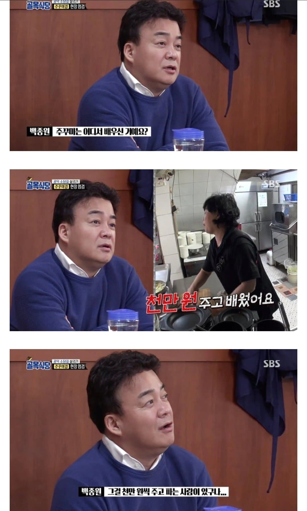

79 · 26 · 2 시간 전 · 원문
크 역시 백종원 대표님

뿌가놈 네 이놈!!
수집 당시 댓글 26개
뀰단 · 3 시간 전
선생님 · 3 시간 전
역시 장사천재 외식업계의 전설
웬전도사 · 3 시간 전
갑자기 궁금한데가쓰오부시 대체품 만들었던거 잘 되었음??
↳ 답글 · 익명
아 그 멸치?언급조차 안되는걸 보면 말안해도 알쥬?
↳ 답글 · 합격가즈아 · 3 시간 전
그거 진짜 쓴사람 후기 봤었는데 별로라고 했을껄?
↳ 답글 · 보라매 · 3 시간 전
https://www.wikitree.co.kr/articles/500468망했고 원래 일본에 있던 가공법이래
↳ 답글 · 진상보면총쏨 · 3 시간 전
쫄딱 망했을껄
↳ 답글 · 우정잉 · 2 시간 전
후기 옛날에 올라온거 어설프게해서 ㅈㄴ썼댔음
위고비전도사 · 3 시간 전
우리도 레시피 2천 1천 5백 3종류로 나눠팔긴하는데
↳ 답글 · 숨고르는중인청년 · 3 시간 전
질문이있읍니다1. 차이점이 뭐야? 2. 내가 5백의 레시피를 사서 개량시키면 2천의 레시피에 근접할수있는 구조입니까?
↳ 답글 · 위고비전도사 · 2 시간 전
1. 귀찮아서 짧게 설명하면 레시피만 / 레시피 + 일배우기 / 레시피 + 오픈지원 + 오픈후방문지원등등2. 5백의 레시피와 2천의 레시피는 차이가 없음
↳ 답글 · 숨고르는중인청년 · 2 시간 전
답변 고마워
↳ 답글 · 세상의중심에서상태창을외치다 · 2 시간 전
보면 레시피 팔때 완벽하게 같은 맛 안나오게 계량 조금 다르게 알려준다던데 진짜 그럼?
대체로 그렇게 한다는걸로 알고있긴한데우리는 다 알려줌왜냐면 눈앞에서 만드는거 보여주기 때문다 알려줄수 있는 이유는 우리 음식은 레시피 안다고 100점짜리 음식이 안나와서 ㅋㅋㅋ레시피는 90점인데 조리하는 사람이 잘해야 100점이 나오는 음식이라 ㅋㅋㅋ
뜌땨이뜌뜌땨 · 3 시간 전
백종원 빼고 보더라도 실제 외식업계에서 장사하는방법중하나가 레시피파는게 은근 주류임 손님상대로 하는장사가 아닌 장사하는사람 상대로 하는 장사
이직마려운디자이너 · 3 시간 전
깨어있음 · 3 시간 전
너무 싸게 팔아서 놀람
엄복동 · 3 시간 전
근데 백종원 얘기는 아니고프렌차이즈 같은데 보면 몇백번 이상 조합 바꿔가면서 테스트하는건 맞으니까..
아쎄이 · 3 시간 전
또어묵이야?
진상보면총쏨 · 3 시간 전
가만보면 내용이 지 칭찬밖에 없네우리나라에서 지 입으로 저렇게 자기 칭찬하는것도어찌보면 참 대단해 보통 자기애가 아녀
↳ 답글 · 나를묶고가둔다면사랑도묶 · 1 시간 전
브랜딩 고수임 이건 인정해야됨
니소그 · 3 시간 전
초기에는 되게 겸손한 컨셉으로 뜬 것 같은데방송 되고 나서부터는 거의 다 자기자랑으로 바뀌긴 했지
시나몬롤 · 2 시간 전
직원 두명이 한달만 잡고있어도 천만원정도 하지 않을까
Doro · 2 시간 전
레시피 파는 사람들 있긴하더라. 입소문으로만 장사하는 느낌인데 꽤 돈이 되나 봄
솜털보지 · 2 시간 전
전기m생 · 1 시간 전
우리 이모가 고기집 장사할때 서울이었나 어디 존나 유명한데서 천만원 주고 김치 담그는거 배워왔는데 진짜 존나 맛있긴했음 손님들이 김치먹으러 식당 올정도였음ㅋㅋㅋ
댓글
수집 당시 댓글 26개
뀰단 · 3 시간 전
선생님 · 3 시간 전
역시 장사천재 외식업계의 전설
웬전도사 · 3 시간 전
갑자기 궁금한데
가쓰오부시 대체품 만들었던거 잘 되었음??
· 익명
아 그 멸치?언급조차 안되는걸 보면 말안해도 알쥬?
· 합격가즈아 · 3 시간 전
그거 진짜 쓴사람 후기 봤었는데 별로라고 했을껄?
· 보라매 · 3 시간 전
https://www.wikitree.co.kr/articles/500468
망했고 원래 일본에 있던 가공법이래
· 진상보면총쏨 · 3 시간 전
쫄딱 망했을껄
· 우정잉 · 2 시간 전
후기 옛날에 올라온거 어설프게해서 ㅈㄴ썼댔음
위고비전도사 · 3 시간 전
우리도 레시피 2천 1천 5백 3종류로 나눠팔긴하는데
· 숨고르는중인청년 · 3 시간 전
질문이있읍니다
1. 차이점이 뭐야?
2. 내가 5백의 레시피를 사서 개량시키면 2천의 레시피에 근접할수있는 구조입니까?
· 위고비전도사 · 2 시간 전
1. 귀찮아서 짧게 설명하면 레시피만 / 레시피 + 일배우기 / 레시피 + 오픈지원 + 오픈후방문지원등등
2. 5백의 레시피와 2천의 레시피는 차이가 없음
· 숨고르는중인청년 · 2 시간 전
답변 고마워
· 세상의중심에서상태창을외치다 · 2 시간 전
보면 레시피 팔때 완벽하게 같은 맛 안나오게 계량 조금 다르게 알려준다던데 진짜 그럼?
· 위고비전도사 · 2 시간 전
대체로 그렇게 한다는걸로 알고있긴한데
우리는 다 알려줌
왜냐면 눈앞에서 만드는거 보여주기 때문
다 알려줄수 있는 이유는 우리 음식은 레시피 안다고 100점짜리 음식이 안나와서 ㅋㅋㅋ
레시피는 90점인데 조리하는 사람이 잘해야 100점이 나오는 음식이라 ㅋㅋㅋ
뜌땨이뜌뜌땨 · 3 시간 전
백종원 빼고 보더라도
실제 외식업계에서 장사하는방법중하나가 레시피파는게 은근 주류임
손님상대로 하는장사가 아닌 장사하는사람 상대로 하는 장사
이직마려운디자이너 · 3 시간 전
깨어있음 · 3 시간 전
너무 싸게 팔아서 놀람
엄복동 · 3 시간 전
근데 백종원 얘기는 아니고
프렌차이즈 같은데 보면 몇백번 이상 조합 바꿔가면서 테스트하는건 맞으니까..
아쎄이 · 3 시간 전
또어묵이야?
진상보면총쏨 · 3 시간 전
가만보면 내용이 지 칭찬밖에 없네
우리나라에서 지 입으로 저렇게 자기 칭찬하는것도
어찌보면 참 대단해 보통 자기애가 아녀
· 나를묶고가둔다면사랑도묶 · 1 시간 전
브랜딩 고수임 이건 인정해야됨
니소그 · 3 시간 전
초기에는 되게 겸손한 컨셉으로 뜬 것 같은데
방송 되고 나서부터는 거의 다 자기자랑으로 바뀌긴 했지
시나몬롤 · 2 시간 전
직원 두명이 한달만 잡고있어도 천만원정도 하지 않을까
Doro · 2 시간 전
레시피 파는 사람들 있긴하더라. 입소문으로만 장사하는 느낌인데 꽤 돈이 되나 봄
솜털보지 · 2 시간 전
전기m생 · 1 시간 전
우리 이모가 고기집 장사할때 서울이었나 어디 존나 유명한데서 천만원 주고 김치 담그는거 배워왔는데 진짜 존나 맛있긴했음 손님들이 김치먹으러 식당 올정도였음ㅋㅋㅋ